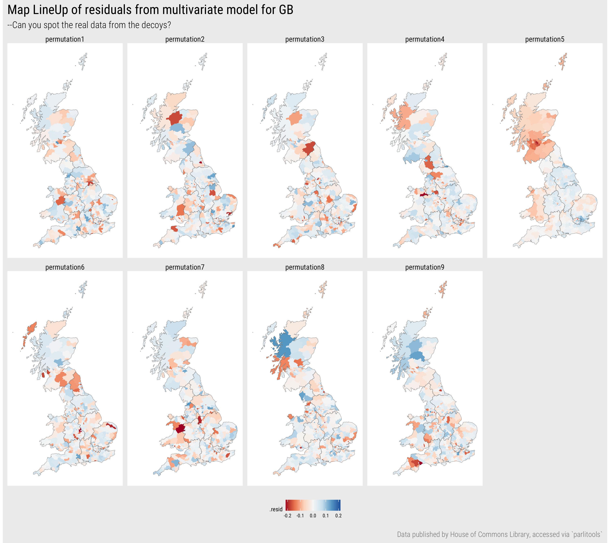
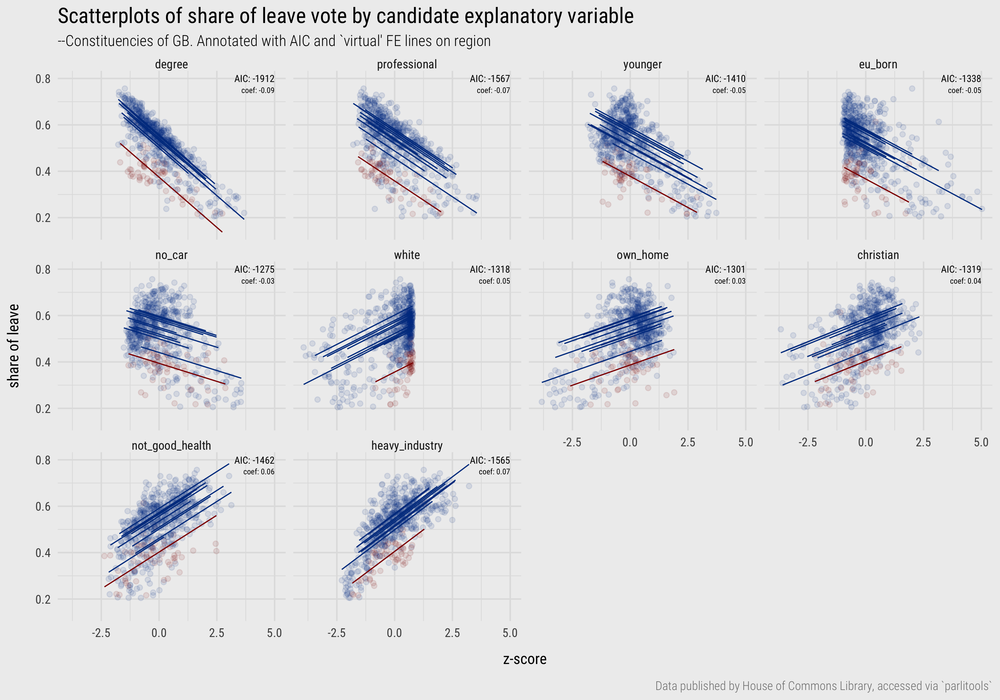
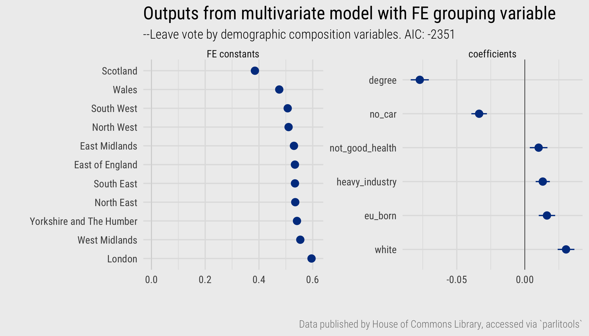
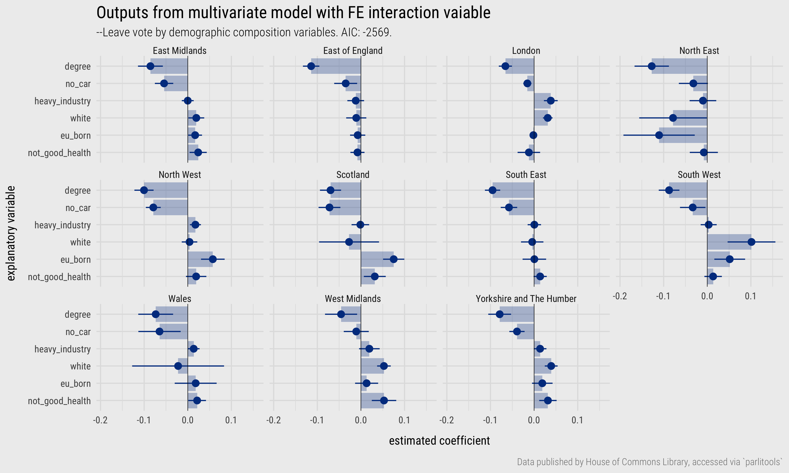

<!DOCTYPE html>
<html lang="en-us" 
      xmlns:og="http://ogp.me/ns#" 
      xmlns:fb="https://www.facebook.com/2008/fbml">

<head>

  <meta charset="utf-8">
  <meta name="viewport" content="width=device-width, initial-scale=1">
  <meta http-equiv="X-UA-Compatible" content="IE=edge">
  
  
  
  <meta name="generator" content="Wowchemy 5.0.0-beta.2 for Hugo">
  

  

  
  

  
  
  
  
  
    
    
    
  
  

  

  
  
  
    
  
  <meta name="description" content="Contents  Introduction Concepts  Geographic dependency and non-stationarity Representing geographic context Geographic context as grouped nuisance term Geographic context as grouped effects Addressing estimate volatility Geographic context as continuous effects  Techniques  Import Model FE Model Interaction Plot tidy models  Conclusions References   By the end of this session you should gain the following knowledge:
  Understand two categories of geographic effect in regression modelling: geographical dependence in values and non-stationarity in processes.">

  
  <link rel="alternate" hreflang="en-us" href="../../class/07-class/">

  


  


  
  
    <link rel="preconnect" href="https://fonts.gstatic.com" crossorigin>
  

  
  
  
  <meta name="theme-color" content="#424242">
  

  
  
  
  <script src="../../js/mathjax-config.js"></script>
  

  
  
  
  
    
    
    <link rel="stylesheet" href="https://cdnjs.cloudflare.com/ajax/libs/font-awesome/5.14.0/css/all.min.css" integrity="sha256-FMvZuGapsJLjouA6k7Eo2lusoAX9i0ShlWFG6qt7SLc=" crossorigin="anonymous">
    <link rel="stylesheet" href="https://cdnjs.cloudflare.com/ajax/libs/fancybox/3.5.7/jquery.fancybox.min.css" integrity="sha256-Vzbj7sDDS/woiFS3uNKo8eIuni59rjyNGtXfstRzStA=" crossorigin="anonymous" media="print" onload="this.media='all'">

    
    
    
      
    
    
      
      
        
          <link rel="stylesheet" href="https://cdnjs.cloudflare.com/ajax/libs/highlight.js/10.2.0/styles/github.min.css" crossorigin="anonymous" title="hl-light" media="print" onload="this.media='all'">
          <link rel="stylesheet" href="https://cdnjs.cloudflare.com/ajax/libs/highlight.js/10.2.0/styles/dracula.min.css" crossorigin="anonymous" title="hl-dark" media="print" onload="this.media='all'" disabled>
        
      
    

    

    

    
    
      

      
      

      
    
      

      
      

      
    
      

      
      

      
    
      

      
      

      
    
      

      
      

      
    
      

      
      

      
    
      

      
      

      
    
      

      
      

      
    
      

      
      

      
    
      

      
      

      
    
      

      
      

      
    
      

      
      

      
        <script src="https://cdnjs.cloudflare.com/ajax/libs/lazysizes/5.2.2/lazysizes.min.js" integrity="sha512-TmDwFLhg3UA4ZG0Eb4MIyT1O1Mb+Oww5kFG0uHqXsdbyZz9DcvYQhKpGgNkamAI6h2lGGZq2X8ftOJvF/XjTUg==" crossorigin="anonymous" async></script>
      
    
      

      
      

      
    
      

      
      

      
    
      

      
      

      
        <script src="https://cdn.jsdelivr.net/npm/mathjax@3/es5/tex-chtml.js" integrity="" crossorigin="anonymous" async></script>
      
    
      

      
      

      
    
      

      
      

      
    

  

  
  
  
    
      
      
      <link rel="stylesheet" href="https://fonts.googleapis.com/css?family=Roboto+Condensed:ital,wght@0,300;1,300%7CRoboto+Slab:wght@300%7CFjalla+One&display=swap">
      
    
  

  
  
  
  
  
  <link rel="stylesheet" href="../../css/wowchemy.dd269ef766d14a5f3446f7ad8c8a19cc.css">

  


  

  


  
  

  

  
  <link rel="manifest" href="../../index.webmanifest">
  

  <link rel="icon" type="image/png" href="../../images/icon_huc37306104a4011cad6e5f9118ea6dd2c_187381_32x32_fill_lanczos_center_2.png">
  <link rel="apple-touch-icon" type="image/png" href="../../images/icon_huc37306104a4011cad6e5f9118ea6dd2c_187381_180x180_fill_lanczos_center_2.png">

  <link rel="canonical" href="../../class/07-class/">

  
  
  
  
  
  
  
    
  
  
  <meta property="twitter:card" content="summary_large_image">
  
  <meta property="twitter:site" content="@fcorowe">
  <meta property="twitter:creator" content="@fcorowe">
  
  <meta property="og:site_name" content="Introduction to Geographic Data Science">
  <meta property="og:url" content="/class/07-class/">
  <meta property="og:title" content="Visualization for model building 2: Expose, estimate, evaluate | Introduction to Geographic Data Science">
  <meta property="og:description" content="Contents  Introduction Concepts  Geographic dependency and non-stationarity Representing geographic context Geographic context as grouped nuisance term Geographic context as grouped effects Addressing estimate volatility Geographic context as continuous effects  Techniques  Import Model FE Model Interaction Plot tidy models  Conclusions References   By the end of this session you should gain the following knowledge:
  Understand two categories of geographic effect in regression modelling: geographical dependence in values and non-stationarity in processes."><meta property="og:image" content="/media/vis-for-gds.png">
  <meta property="twitter:image" content="/media/vis-for-gds.png"><meta property="og:locale" content="en-us">
  
    
      <meta property="article:published_time" content="2022-06-20T00:00:00&#43;00:00">
    
    <meta property="article:modified_time" content="2022-06-24T22:06:32&#43;01:00">
  

  


  


  


  <link rel="shortcut icon" href="../../favicon.ico" />
  <link rel="apple-touch-icon-precomposed" sizes="57x57" href="../../img/apple-touch-icon-57x57.png" />
  <link rel="apple-touch-icon-precomposed" sizes="114x114" href="../../img/apple-touch-icon-114x114.png" />
  <link rel="apple-touch-icon-precomposed" sizes="72x72" href="../../img/apple-touch-icon-72x72.png" />
  <link rel="apple-touch-icon-precomposed" sizes="144x144" href="../../img/apple-touch-icon-144x144.png" />
  <link rel="apple-touch-icon-precomposed" sizes="120x120" href="../../img/apple-touch-icon-120x120.png" />
  <link rel="apple-touch-icon-precomposed" sizes="152x152" href="../../img/apple-touch-icon-152x152.png" />
  <link rel="icon" type="image/png" href="../../img/favicon-32x32.png" sizes="32x32" />
  <link rel="icon" type="image/png" href="../../img/favicon-16x16.png" sizes="16x16" />
  <meta name="application-name" content="Summer School in Computational Social Science: Introduction to Geographic Data Science" />
  <meta name="msapplication-TileColor" content="#FFFFFF" />
  <meta name="msapplication-TileImage" content="/img/mstile-144x144.png" />


  <title>Visualization for model building 2: Expose, estimate, evaluate | Introduction to Geographic Data Science</title>

</head>


<body id="top" data-spy="scroll" data-offset="70"
    data-target="#TableOfContents"
    >

    


    


<nav class="navbar navbar-expand-lg navbar-light compensate-for-scrollbar" id="navbar-main">
  <div class="container-xl">

    
    <div class="d-none d-lg-inline-flex">
      <a class="navbar-brand" href="../../">Introduction to Geographic Data Science</a>
    </div>
    

    
    <button type="button" class="navbar-toggler" data-toggle="collapse"
            data-target="#navbar-content" aria-controls="navbar" aria-expanded="false" aria-label="">
    <span><i class="fas fa-bars"></i></span>
    </button>
    

    
    <div class="navbar-brand-mobile-wrapper d-inline-flex d-lg-none">
      <a class="navbar-brand" href="../../">Introduction to Geographic Data Science</a>
    </div>
    

    
    
    <div class="navbar-collapse main-menu-item collapse justify-content-end" id="navbar-content">

      
      <ul class="navbar-nav d-md-inline-flex">
        

        

        
        
        
          
        

        

        
        
        
        

        
          
            
            
          
          
        

        <li class="nav-item">
          <a class="nav-link " href="../../overview/"><span>Overview</span></a>
        </li>

        
        

        

        
        
        
          
        

        

        
        
        
        

        
          
            
            
          
          
        

        <li class="nav-item">
          <a class="nav-link " href="../../schedule/"><span>Schedule</span></a>
        </li>

        
        

        

        
        
        
          
        

        

        
        
        
        

        
          
            
            
          
          
        

        <li class="nav-item">
          <a class="nav-link " href="../../reading/"><span>Reading</span></a>
        </li>

        
        

        

        
        
        
          
        

        

        
        
        
        

        
          
            
            
          
          
        

        <li class="nav-item">
          <a class="nav-link  active" href="../../class/"><span>Class</span></a>
        </li>

        
        

      

        
      </ul>
    </div>

    <ul class="nav-icons navbar-nav flex-row ml-auto d-flex pl-md-2">

      
      

      
      

      
      

      

    </ul>

  </div>
</nav>


    

<div class="container-fluid docs">
    <div class="row flex-xl-nowrap">
        <div class="col-12 col-md-3 col-xl-2 docs-sidebar">
            


  
    
  


<form class="docs-search d-flex align-items-center">
  <button class="btn docs-toggle d-md-none p-0 mr-3" type="button" data-toggle="collapse" data-target="#docs-nav" aria-controls="docs-nav" aria-expanded="false" aria-label="Toggle section navigation">
    <span><i class="fas fa-bars"></i></span>
  </button>

  
</form>

<nav class="collapse docs-links" id="docs-nav">
  

  
  
  
    
  

  
  <div class="docs-toc-item">
    <a class="docs-toc-link" href="../../class/">Overview</a>
    <ul class="nav docs-sidenav">
      
      <li >
        <a href="../../class/">Class sessions</a>
      </li>

      
    </ul>
    

  </div>
  
  <div class="docs-toc-item">
    <a class="docs-toc-link" href="../../class/01-class/">Class</a>
    <ul class="nav docs-sidenav">
      
      <li >
        <a href="../../class/01-class/">1: Introduction</a>
      </li>

      
      <li >
        <a href="../../class/02-class/">2: Data fundamentals</a>
      </li>

      
      <li >
        <a href="../../class/03-class/">3: Visualization fundamentals</a>
      </li>

      
      <li >
        <a href="../../class/04-class/">4: Visualization for exploratory data analysis</a>
      </li>

      
      <li >
        <a href="../../class/05-class/">5: Visualization for exploring spatial networks</a>
      </li>

      
      <li >
        <a href="../../class/06-class/">6: Visualization for model building 1</a>
      </li>

      
      <li class="active">
        <a href="../../class/07-class/">7: Visualization for model building 2</a>
      </li>

      
      <li >
        <a href="../../class/08-class/">8: Visualization for uncertainty analysis</a>
      </li>

      
      <li >
        <a href="../../class/09-class/">9: Visualization for communication and storytelling</a>
      </li>

      
    </ul>
    

  </div>
  
  
</nav>

        </div>

        

        <main class="col-12 col-md-9 col-xl-8 py-md-3 pl-md-5 docs-content" role="main">

            <article class="article">

                <div class="docs-article-container">
                    <h1>Visualization for model building 2: Expose, estimate, evaluate</h1>

                    

                    

                    
                    <div class="due-date p-2 mb-3 bg-secondary text-white">
                        Materials from class on Monday, June 20, 2022
                    </div>
                    

                    <div class="article-style">
                        
<!-- BLOGDOWN-HEAD -->
<script src="../../rmarkdown-libs/header-attrs/header-attrs.js"></script>
<!-- /BLOGDOWN-HEAD -->

<h2>Contents</h2>
<div id="TOC">
<ul>
<li><a href="#introduction">Introduction</a></li>
<li><a href="#concepts">Concepts</a>
<ul>
<li><a href="#geographic-dependency-and-non-stationarity">Geographic dependency and non-stationarity</a></li>
<li><a href="#representing-geographic-context">Representing geographic context</a></li>
<li><a href="#geographic-context-as-grouped-nuisance-term">Geographic context as grouped nuisance term</a></li>
<li><a href="#geographic-context-as-grouped-effects">Geographic context as grouped effects</a></li>
<li><a href="#addressing-estimate-volatility">Addressing estimate volatility</a></li>
<li><a href="#geographic-context-as-continuous-effects">Geographic context as continuous effects</a></li>
</ul></li>
<li><a href="#techniques">Techniques</a>
<ul>
<li><a href="#import">Import</a></li>
<li><a href="#model-fe">Model FE</a></li>
<li><a href="#model-interaction">Model Interaction</a></li>
<li><a href="#plot-tidy-models">Plot tidy models</a></li>
</ul></li>
<li><a href="#conclusions">Conclusions</a></li>
<li><a href="#references">References</a></li>
</ul>
</div>

<p>By the end of this session you should gain the following <strong><em>knowledge</em></strong>:</p>
<p><div class="alert alert-objective">
  <div>
    <ul>
<li><input checked="" disabled="" type="checkbox"> <strong>Understand</strong> two categories of geographic effect in regression modelling: geographical <em>dependence</em> in values and <em>non-stationarity</em> in processes.</li>
<li><input checked="" disabled="" type="checkbox"> <strong>Learn</strong> how linear regression models can be updated to account for and explore these two effects.</li>
</ul>

  </div>
</div>
</p>
<p>By the end of this session you should gain the following <strong><em>practical skills</em></strong>:</p>
<p><div class="alert alert-objective">
  <div>
    <ul>
<li><input checked="" disabled="" type="checkbox"> <strong>Update</strong> linear regression models in R with Fixed Effect (FE) and Interaction terms.</li>
<li><input checked="" disabled="" type="checkbox"> <strong>Extract</strong> model outputs and diagnostics in a <a href="https://vita.had.co.nz/papers/tidy-data.pdf"><code>tidy</code></a> manner.</li>
<li><input checked="" disabled="" type="checkbox"> <strong>Apply</strong> <a href="https://purrr.tidyverse.org/articles/other-langs.html">functional-style programming</a> for working over multiple model outputs.</li>
</ul>

  </div>
</div>
</p>
<div id="introduction" class="section level2">
<h2>Introduction</h2>
<p>The previous session finished by identifying geographic patterning in the residuals of our multivariate regression model that attempts to explain variation in constituency-level Leave voting. Geographic patterning in residuals is common – and expected – in area-level analysis, but is problematic as it indicates <em>bias</em> – that Leave voting is better represented in certain areas than in others because the model ignores some systematic grouping context. This session is again presented as a narrated data analysis – the <a href="../../class/06-class/#concepts-1/">Concepts</a> element is structured around the data analysis and the <a href="../../class/06-class/#techniques-1/">Techniques</a> on working with regression models in R. We will extend our regression model to adjust for geographic context, using visualization to represent and evaluate model outputs.</p>
<p><div class="alert alert-instruction">
  <div>
    <p>Watch <a href="https://www.youtube.com/watch?v=uw1Tag08dK4">Heather Krause’s</a> excellent OpenVisConf 2018 talk on, amongst other things, why it is important to account for this sort of grouping context.</p></p>
<div class="embed-responsive embed-responsive-16by9">
<iframe class="embed-responsive-item" src="https://www.youtube.com/embed/uw1Tag08dK4" frameborder="0" allow="accelerometer; autoplay; encrypted-media; gyroscope; picture-in-picture" allowfullscreen>
</iframe>
</div>
<p>
  </div>
</div>
</p>
</div>
<div id="concepts" class="section level2">
<h2>Concepts</h2>
<div id="geographic-dependency-and-non-stationarity" class="section level3">
<h3>Geographic dependency and non-stationarity</h3>
<p>In the last session we identified two ways in which geographic grouping in residuals can be understood:</p>
<ol style="list-style-type: decimal">
<li><em>Spatial dependence</em> in <strong>variable values</strong>. The geography of GB is quite socially distinctive, so it is reasonable to expect spatial dependence in observed demographic values. For example, the <em>range</em> in variables measuring relative employment in <em>heavy industry</em>, or residents that are <em>white</em>, is likely to be bounded to economic regions and metropolitan-peripheral regional contexts.</li>
<li><em>Spatial non-stationarity</em> in <strong>processes</strong>. This is where associations between variables might be geographically grouped: that the associations vary for different parts of the country and so there is heterogeneity in process. For example, high levels of <em>EU-born</em> migration might affect political attitudes, and thus area-level voting, differently in different parts of the country.</li>
</ol>
<p>‘Global’ models that do not take these types of structure and effect into account may misrepresent the processes they are trying to capture and hide more subtle insights into phenomena. And so this session tries to (briefly) address both.</p>
</div>
<div id="representing-geographic-context" class="section level3">
<h3>Representing geographic context</h3>
<p>There are different ways of constituting geographic context. We have talked about patterning in residuals as being <em>spatial</em>, with values varying smoothly and continuously depending on location. This might be the case, and spatial autocorrelation is present in almost all datasets (<a href="https://en.wikipedia.org/wiki/Tobler%27s_first_law_of_geography">e.g. Tobler’s first law</a>). But given the phenomena we are studying – variation in political voting behaviour and demographic composition of constituencies deliberately linked to <a href="https://ppr.lse.ac.uk/articles/10.31389/lseppr.4/"><em>places</em></a> left-behind by structural-economic change – it also plausible that distinct contexts are linked to regions. The residuals in the <a href="http://127.0.0.1:4321/class/06-class/#exploring-bias-1">previous session’s Map LineUp</a> – also below – do seem to be grouped by regional boundaries, particularly Scotland looks categorically different (for obvious reasons). This suggests that geographic context might be usefully represented as a <em>category</em> rather than continuous variable (location in <em>x,y</em>). For most of the session we will represent geographic context as a <em>regional</em> grouping and cover approaches both to modelling <em>spatial dependence</em> in <strong>values</strong> and <em>spatial non-stationarity</em> in <strong>processes</strong>.</p>
<div class="figure" style="text-align: left"><span style="display:block;" id="fig:plot-lineup"></span>

<p class="caption">
Figure 1: Map LineUp of residuals in which the ‘real’ dataset is presented alongside 8 decoy plots generated by randomly permuting the observed residuals around constituencies.
</p>
</div>
</div>
<div id="geographic-context-as-grouped-nuisance-term" class="section level3">
<h3>Geographic context as grouped nuisance term</h3>
<p>A common approach to treating geographic <em>dependence</em> in the <strong>values</strong> of variables is to model geographic context as a Fixed Effect (FE).</p>
<p>A dummy variable is created for each group (region in our case), and every region receives a constant; you can think of this as a separate intercept for its regression line. Any group-level sources of variation in the outcome are collapsed into the FE variable, which means that regression coefficients are not complicated by this more messy variation – they now capture the association between demographics and Leave after adjusting for systematic differences in the Leave vote due to region. So, for example, we know that Scotland is politically different from the rest of GB and that this appears to drag down the observed Leave vote for its constituencies, and so the constant term on region adjusts for this and prevents the estimated regression coefficients (inferred associations between variables) from being affected. The constant term also allows you to estimate the ‘base level’ of the outcome for each grouping variable – e.g. net of demographic composition, the expected Leave vote in a particular region.</p>
<p>The linear regression model introduced last week can be easily extended with the FE term (<span class="math inline">\(\textcolor{highlight}{\gamma_{j}}\)</span>). For a single variable model:</p>
<p><span class="math display">\[\begin{align*}
       y_{i}&amp;= \textcolor{highlight}{\gamma_{j}}  + \beta_{1}x_{i1} + \varepsilon_{i}  \\
\end{align*}\]</span></p>
<p>So we now estimate the Leave vote in each constituency (<span class="math inline">\(y_{i}\)</span>) as a function of:</p>
<ul>
<li><span class="math inline">\(\textcolor{highlight}{\gamma_{j}}\)</span>, a constant term similar to an intercept for region <span class="math inline">\(j\)</span>, <span class="math inline">\(+\)</span></li>
<li><span class="math inline">\(\beta_{1}=\beta_{1}x_{i1}\)</span>, the slope, indicating in which direction and to what extent some explanatory variable measured at constituency <span class="math inline">\(i\)</span> is associated with Leave, <span class="math inline">\(+\)</span></li>
<li><span class="math inline">\(\varepsilon_{i}\)</span>, the difference between <span class="math inline">\(y_{i}\)</span> (the observed value) at constituency <span class="math inline">\(i\)</span> and the <em>unobservable</em> true population value of the Leave vote in that constituency (statistical error)</li>
</ul>
<!-- To illustrate this, Figure \@ref(fig:scatters-fe) is an updated set of scatterplots now annotated with coefficients, $R^2$ and coefficient values for single variable linear regression models fit separately for each explanatory variable with a region FE. The $R^2$ is extremely high as we are collapsing variation assumed to be between regions into the FE term.

Plotting the virtual regression lines -- regression lines offset by the FE constant -- is interesting as it tells us a little about the nature of association in our explanatory variables. For the *degree-educated* and *professional* variables especially, regional *dependence* in Leave voting needs to be adjusted for -- once taken into account, there is a very strong association between *degree-education* and *Leave* -- most obvious in the lines for Scotland (red).  Although we are not yet modelling for this explicitly, eyeballing the chart, there is not obvious evidence for regional heterogeneity in the *associations* with Leave for *degree-educated* and so it might be regarded as a 'global' variable -- a clear positive association with Leave irrespective of region. There may be regional specificity in the associations with Leave for the other explanatory variables. -->
<p>To illustrate this, Figure <a href="#fig:scatters-fe">2</a> is an updated set of scatterplots now annotated with ‘virtual’ regression lines for single variable linear regression models fit separately for each explanatory variable with a region FE. Plotting the virtual regression lines – regression lines offset by the FE constant – is interesting as it tells us a little about the nature of association in our explanatory variables. Given the way we have specified our model, the FE constants serve effectively as intercepts, <span class="math inline">\(R^2\)</span> is no longer meaningful and so other measures of fit such as <a href="https://en.wikipedia.org/wiki/Akaike_information_criterion">AIC</a> should be used to evaluate relative fit.</p>
<p>For the <em>degree-educated</em> and <em>professional</em> variables especially, regional <em>dependence</em> in Leave voting needs to be adjusted for – once taken into account, there is a very strong association between <em>degree-education</em> and <em>Leave</em>, most obvious in the lines for Scotland (red). Although we are not yet modelling for this explicitly, eyeballing the chart, there is not obvious evidence for regional non-stationarity in the <em>associations</em> with Leave for <em>degree-educated</em> and so it might be regarded as a ‘global’ variable – a clear positive association with Leave irrespective of region. There may be regional specificity in the associations with Leave for the other explanatory variables.</p>
<div class="figure" style="text-align: left"><span style="display:block;" id="fig:scatters-fe"></span>

<p class="caption">
Figure 2: Scatterplots of constituency Leave vote against candidate explanatory variables, annotated with FE ‘virtual’ regression lines, coefficients and model fit (AIC – the lower the value, better the model). Scotland is highlighted red.
</p>
</div>
<p>Presented in Figure <a href="#fig:plot-outputs-fe">3</a> are updated regression coefficients for the model fit with a FE on region. In the left panel are the FE constants. Together these capture the variance in Leave vote between regions after accounting for demographic composition. These coefficients have interesting properties: they are the estimated size of the Leave vote for a constituency in a region <em>net</em> of demographic composition. London is in interesting here. When initially analysing variation in the vote, constituencies in Scotland and London were distinctive in voting in much smaller proportions than the rest of the country for Leave. Given the associations we observe with Leave voting and demographic composition, however, if we were to randomly sample two constituencies that contain the same demographic characteristics, one in London and one in another region (say North West), on average we’d expect Leave for the constituency in London to be higher (~60%) than that sampled from North West (~51%). A separate, and more anticipated pattern is that Scotland would have a lower Leave vote (~38%) – that is, net of demographics there is some additional context in Scotland that means Leave is lower than in other regions.</p>
<p>In the right panel are the regression coefficients net of this between-region variation. Compared to the model specified without FEs, the coefficients are estimated with less uncertainty (tighter standard errors). In the previous session, the <em>white</em> variable was shown counterintuitively to have a slight negative association with Leave (although there was high uncertainty here). Now the <em>white</em> variable has a direction of effect that conforms to expectation – net of variation in other demographics increased proportions of <em>white</em> residents is associated with increased Leave voting. For the other variable with a counterintuitive effect – <em>EU born</em> – the coefficient still suggests a positive association with Leave.</p>
<!-- Standard practice for FE dummy variables is to hold one as a "reference" variable for comparison.   -->
<div class="figure" style="text-align: left"><span style="display:block;" id="fig:plot-outputs-fe"></span>

<p class="caption">
Figure 3: Output from multiple regression model of Leave vote by demographic composition of constituency with FE on region.
</p>
</div>
<!--
* Each group receives a separate intercept for its (virtual) regression line, while the relationships between all other predictors are the same (i.e., parallel regression lines)
* Including the region FE, we are allowing for separate regression lines, where each has its own intercept.
* By including the region FE, we are accounting for any group-level sources of variation in the outcome you’re trying to explain - sources of variation that are not captured in your regression otherwise.
* FEs allow you to estimate the “base level” of your outcome of interest for each group -- e.g. net of demographics the Leave vote in ?? is ?? much higher/lower than ??.
* we are estimating the relationship between having adjusted. for systematic differences in outcome and explanatory variables across regions -->
</div>
<div id="geographic-context-as-grouped-effects" class="section level3">
<h3>Geographic context as grouped effects</h3>
<p>The benefit of the FE adjustment is that it provides coefficient estimates that are not affected by between-region variation. The derived FE constants themselves also allow group differences to be quantified net of differences in demographics. However, they simply identify the fact that this variation exists – they do not permit non-stationarity in <em>process</em>. It is conceivable that the strength and direction of association between Leave and the candidate demographic variables may vary between regions. For example, that increased levels of <em>EU-born</em> (non-UK) residents might affect area-level voting differently in certain regions than others.</p>
<p>Rather than simply allowing a constant term to vary, we can update the linear regression model with an <a href="https://en.wikipedia.org/wiki/Interaction_(statistics)">interaction term</a> (<span class="math inline">\(\textcolor{highlight}{\beta_{1j}}{x_{i1}}\)</span>) that allows the coefficient estimates to vary depending on region. This means we get a separate constant term and coefficient estimate of the effect of each variable on Leave for every region – it provides a framework for exploring regionally-distinct effects.</p>
<p><span class="math display">\[\begin{align*}
       y_{i}&amp;= \textcolor{highlight}{\gamma_{j}}  + \textcolor{highlight}{\beta_{1j}}x_{i1} + \varepsilon_{i}  \\
\end{align*}\]</span></p>
<ul>
<li><span class="math inline">\(\textcolor{highlight}{\gamma_{j}}\)</span>, a constant term similar to an intercept for region <span class="math inline">\(j\)</span>, <span class="math inline">\(+\)</span></li>
<li><span class="math inline">\(\textcolor{highlight}{\beta_{1j}}x_{i1}\)</span>, the region-specific slope, indicating in which direction and to what extent some demographic variable at constituency <span class="math inline">\(i\)</span> and in region <span class="math inline">\(j\)</span> is associated with Leave, <span class="math inline">\(+\)</span></li>
<li><span class="math inline">\(\varepsilon_{i}\)</span>, the difference between <span class="math inline">\(y_{i}\)</span> (the observed value) at constituency <span class="math inline">\(i\)</span> and the <em>unobservable</em> true ‘population’ value of the Leave vote in that constituency (statistical error)</li>
</ul>
<p>Figure <a href="#fig:scatters-interaction">4</a> is an updated set of scatterplots again annotated with ‘virtual’ regression lines, now with slopes that vary. Again the structure of these slopes is interesting:</p>
<ul>
<li>parallel slopes with large variation in vertical position suggest that there is variation in the outcome (Leave) between regions, but a <em>consistent association</em> between variables exists;</li>
<li>substantial changes in slope (cluttered display) suggests that the pattern of <em>association switches between regions</em>. Most obvious here is the <em>EU-born</em> and <em>no-car</em> variable.</li>
</ul>
<div class="figure" style="text-align: left"><span style="display:block;" id="fig:scatters-interaction"></span>

<p class="caption">
Figure 4: Scatterplots of constituency Leave vote against candidate explanatory variables, annotated with FE regression lines for interaction on region. Scotland is highlighted red.
</p>
</div>
<p>In Figure <a href="#fig:plot-outputs-interaction">5</a> are region-specific coefficients derived from a multivariate model with an interaction term introduced on region. In each region, <em>degree-educated</em> has a negative coefficient and with reasonably tight uncertainty estimates, or at least CIs that do not cross 0. The other variables are subject to more uncertainty. The <em>no-car</em> variable is also negatively associated with Leave, a variable we thought may separate metropolitan versus peripheral contexts, but the strength of negative association, after controlling for variation in other demographic factors, does vary by region. The <em>heavy industry</em> variable, previously identified as being strongly associated with Leave (e.g. <a href="../../06-class/#quantifying-and-exploring-co-variation">previous session</a>), has a clear positive association only for London and to a much lesser extent for North West and Wales (small coefficients). The EU born variable is again the least consistent as it flips between positive and negative association when analysed at the regional-level: after controlling for variation in other demographic characteristics it is positively associated with Leave for North West, Scotland, South West, but negatively associated with Leave for the North East (though with coefficients that are subject to much variation).</p>
<div class="figure" style="text-align: left"><span style="display:block;" id="fig:plot-outputs-interaction"></span>

<p class="caption">
Figure 5: Output from multiple regression model of Leave vote by demographic composition of constituency with FE and interaction on region.
</p>
</div>
</div>
<div id="addressing-estimate-volatility" class="section level3">
<h3>Addressing estimate volatility</h3>
<p>Given the reasonably large standard errors, it is difficult to make strong claims about regional nonstationarity in <em>process</em> form the models presented above. This might be due to overfitting, caused by the fact that we introduce additional terms to the regression model (region as an interaction) without adding data – our coefficients may begin to fit noise rather than true effects.</p>
<p>Given the fact that our data are hierarchically structured (constituencies sit within regions) hierarchical <a href="https://en.wikipedia.org/wiki/Multilevel_model">multi-level modelling</a> may be more appropriate to modelling this sort of regional grouping. Multi-level modelling uses <a href="https://solomonkurz.netlify.app/post/stein-s-paradox-and-what-partial-pooling-can-do-for-you/">partial pooling</a> to make estimated coefficients more conservative where there are comparatively few observations in particular groupings. There are numerous resources on multi-level modelling in R (see <a href="https://bookdown.org/roback/bookdown-BeyondMLR/">Roback &amp; Legler 2021</a> for an in-progress example). The reason for the FE approach here is a prosaic one: I wanted to use model-building functions in R that worked well with <a href="https://www.tidymodels.org/"><code>tidymodels</code></a>, although annoyingly I’ve recently noticed that a <code>package</code> for combining multi-level modelling with <code>tidymodels</code> is <a href="https://github.com/tidymodels/multilevelmod">under development here</a>.</p>
<p>Alternatively, it may be useful to generate different model formulations for different regions – e.g. particular combinations of explanatory variable. <a href="https://en.wikipedia.org/wiki/Regularization_(mathematics)">Penalised regression</a> provides a principled means of automatic variable selection and has been applied to generate regional and state area-level model specifications for the Brexit <span class="citation">(<a href="#ref-beecham_locally_2018" role="doc-biblioref">Beecham, Slingsby, and Brunsdon 2018</a>)</span> and Trump <span class="citation">(<a href="#ref-beecham_regionally_2020" role="doc-biblioref">Beecham, Williams, and Comber 2020</a>)</span> votes, again with more reliably coefficient estimates.</p>
</div>
<div id="geographic-context-as-continuous-effects" class="section level3">
<h3>Geographic context as continuous effects</h3>
<!-- Previously, we identified two ways in which geographic context might be represented: geography as categorical variable (region) and geography as continuous variable (location in *x,y*).  -->
<p>Geographically-weighted (GW) statistics provides a mechanism for exploring the extent to which values and associations vary <em>continuously</em> over space <span class="citation">(<a href="#ref-brunsdon_geographically_2002" role="doc-biblioref">Brunsdon, Fortheringham, and Charlton 2002</a>)</span>. This involves generating local statistics, and in the case of <a href="https://journals.sagepub.com/doi/10.1068/a301905">Geographically Weighted Regression</a> (GWR) local regression coefficients, for each spatial unit. If applied to our dataset, separate regression coefficients for each constituency are estimated that take into account observed values for Leave and the demographic variables in nearby constituencies. GW-statistics enables spatial non-stationarity in process to be flexibly explored and characterised. As GWR involves generating many hundreds of parameter estimates, visual analysis are often used in its interpretation <span class="citation">(e.g. <a href="#ref-dykes_geographically_2007" role="doc-biblioref">Dykes and Brunsdon 2007</a>)</span>. I don’t want to burden you with yet another modelling paradigm, but <a href="https://www.roger-beecham.com/data-science-practicals/">this repo</a> contains some (rather dated) materials I previously prepared on GWR with the Brexit dataset.</p>
</div>
</div>
<div id="techniques" class="section level2">
<h2>Techniques</h2>
<p>The technical element to this session demonstrates how linear regression models can be updated with Fixed Effects and Interaction Terms. Approaches for extracting model summaries and diagnostics introduced in the previous session will be used again.</p>
<ul>
<li>Download the <a href="../../homework/07-homework_files/07-template.Rmd"><i class="fab fa-r-project"></i> 07-template.Rmd</a> file for this session and save it to the <code>reports</code> folder of your <code>vis-for-gds</code> project.</li>
<li>Open your <code>vis-for-gds</code> project in RStudio and load the template file by clicking <code>File</code> &gt; <code>Open File ...</code> &gt; <code>reports/07-template.Rmd</code>.</li>
</ul>
<div id="import" class="section level3">
<h3>Import</h3>
<p>The template file lists the required packages: <code>tidyverse</code>, <code>sf</code>, <code>parlitools</code> and also the <code>tidymodels</code> package for extracting model outputs. You will also need to re-load the datasets that you created in the previous session:</p>
<ul>
<li><code>cons_outline</code> : a data frame loaded from a <code>.geojson</code> file containing boundaries for drawing constituencies.</li>
<li><code>data_for_models</code> : data frame containing the outcome variable and z-score transformed explanatory variables.</li>
</ul>
</div>
<div id="model-fe" class="section level3">
<h3>Model FE</h3>
<p>To include a FE on region, we convert <code>region</code> to a factor variable (this effectively creates dummies) and include it as an additional term in <code>lm()</code>. By default a “reference” region appears and the FE regression coefficients (those for region) describe the effect on the outcome of a constituency being in a given region relative to the “reference” region. So the reference region (intercept) in the model below is the East Midlands – the first in the factor to appear alphabetically. The signed coefficient estimates for regions identifies whether, after controlling for variation in demographics, the Leave vote for a particular region is expected to be higher or lower than this.</p>
<pre class="r"><code>model &lt;- lm(leave ~ region +  degree  + eu_born + white  + no_car +
                      not_good_health + heavy_industry, data=data_for_models)

summary(model)

Call:
lm(formula = leave ~ region + degree + eu_born + white + no_car +
    not_good_health + heavy_industry, data = data_for_models)

Residuals:
      Min        1Q    Median        3Q       Max
-0.198730 -0.020953  0.001834  0.023086  0.115457

# Coefficients:
#                                  Estimate Std. Error t value Pr(&gt;|t|)
# (Intercept)                     0.5896429  0.0330259  17.854  &lt; 2e-16 ***
# regionEast of England           0.0036335  0.0078731   0.462  0.64459
# regionLondon                    0.0654256  0.0094823   6.900 1.30e-11 ***
# regionNorth East                0.0048168  0.0094500   0.510  0.61044
# regionNorth West               -0.0200108  0.0072752  -2.751  0.00612 **
# regionScotland                 -0.1452946  0.0084285 -17.238  &lt; 2e-16 ***
# regionSouth East                0.0037722  0.0075166   0.502  0.61595
# regionSouth West               -0.0232999  0.0078890  -2.953  0.00326 **
# regionWales                    -0.0547155  0.0085991  -6.363 3.87e-10 ***
# regionWest Midlands             0.0236169  0.0074457   3.172  0.00159 **
# regionYorkshire and The Humber  0.0112335  0.0076235   1.474  0.14112
# degree                         -0.0092785  0.0004078 -22.753  &lt; 2e-16 ***
# eu_born                         0.0060143  0.0011372   5.289 1.72e-07 ***
# white                           0.0017054  0.0001765   9.662  &lt; 2e-16 ***
# no_car                         -0.0029004  0.0002519 -11.513  &lt; 2e-16 ***
# not_good_health                 0.0030277  0.0009866   3.069  0.00224 **
# heavy_industry                  0.0030330  0.0006117   4.958 9.23e-07 ***
# ---
# Signif. codes:  0 ‘***’ 0.001 ‘**’ 0.01 ‘*’ 0.05 ‘.’ 0.1 ‘ ’ 1
#
# Residual standard error: 0.03713 on 615 degrees of freedom
# Multiple R-squared:  0.8973,  Adjusted R-squared:  0.8946
# F-statistic: 335.9 on 16 and 615 DF,  p-value: &lt; 2.2e-16</code></pre>
<p>We want our model to represent a dummy for every area and so we add <code>-1</code> to the specification. Doing this removes the intercept (reference region), and this is why <span class="math inline">\(R^2\)</span> is no longer meaningful.</p>
<pre class="r"><code># Include `-1` to include a dummy for every area.
model &lt;- lm(leave ~ region +  degree  + eu_born + white  + no_car +
                      not_good_health + heavy_industry -1, data=data_for_models)

summary(model)

# Coefficients:
#                                  Estimate Std. Error t value Pr(&gt;|t|)
# regionEast Midlands             0.5896429  0.0330259  17.854  &lt; 2e-16 ***
# regionEast of England           0.5932764  0.0309206  19.187  &lt; 2e-16 ***
# regionLondon                    0.6550685  0.0309627  21.157  &lt; 2e-16 ***
# regionNorth East                0.5944597  0.0342229  17.370  &lt; 2e-16 ***
# regionNorth West                0.5696321  0.0329834  17.270  &lt; 2e-16 ***
# regionScotland                  0.4443483  0.0314911  14.110  &lt; 2e-16 ***
# regionSouth East                0.5934151  0.0308656  19.226  &lt; 2e-16 ***
# regionSouth West                0.5663430  0.0320231  17.685  &lt; 2e-16 ***
# regionWales                     0.5349274  0.0340264  15.721  &lt; 2e-16 ***
# regionWest Midlands             0.6132598  0.0326154  18.803  &lt; 2e-16 ***
# regionYorkshire and The Humber  0.6008764  0.0325957  18.434  &lt; 2e-16 ***
# degree                         -0.0092785  0.0004078 -22.753  &lt; 2e-16 ***
# eu_born                         0.0060143  0.0011372   5.289 1.72e-07 ***
# white                           0.0017054  0.0001765   9.662  &lt; 2e-16 ***
# no_car                         -0.0029004  0.0002519 -11.513  &lt; 2e-16 ***
# not_good_health                 0.0030277  0.0009866   3.069  0.00224 **
# heavy_industry                  0.0030330  0.0006117   4.958 9.23e-07 ***
# ---
# Signif. codes:  0 ‘***’ 0.001 ‘**’ 0.01 ‘*’ 0.05 ‘.’ 0.1 ‘ ’ 1
#
# Residual standard error: 0.03713 on 615 degrees of freedom
# Multiple R-squared:  0.9953,  Adjusted R-squared:  0.9951
# F-statistic:  7625 on 17 and 615 DF,  p-value: &lt; 2.2e-16</code></pre>
<p>Again, it is useful to extract details of fit, residuals and other diagnostics in a <code>tidymodel</code> way:</p>
<pre class="r"><code>model &lt;- data_for_models %&gt;%
  mutate(type=&quot;full_dataset&quot;, region=as.factor(region)) %&gt;%
  nest(data=-type) %&gt;%
  mutate(
    # Include `-1` to eliminate the constant term and include a dummy for every area.
    model=map(data, ~lm(leave ~ region +  degree  + eu_born + white  + no_car +
                          not_good_health + heavy_industry -1, data=.x)),
    # glance() for each model fit
    fits = map(model, glance),
    # tidy() for coefficients
    coefs = map(model, tidy),
    # augment() for predictions/residuals
    values=map(model, augment)
  )</code></pre>
</div>
<div id="model-interaction" class="section level3">
<h3>Model Interaction</h3>
<p>To include an Interaction on region, we need to set a variable that will be used to represent these regional constants (<code>cons</code>), and the Interaction is added with the notation <code>:</code>.</p>
<pre class="r"><code>model &lt;- data_for_models %&gt;%
  mutate(
    type=&quot;full_dataset&quot;,
    # Convert to factor variable.
    region=as.factor(region),
    # We need to explicitly set a constant term that we can allow to vary on region.
    cons=1
    ) %&gt;%
  nest(data=-type) %&gt;%
  mutate(
    # `:` Notation implies interaction variables
    model=map(data, ~lm(leave ~ 0 +  (cons + degree  + eu_born + white  + no_car +
                          not_good_health + heavy_industry):(region), data=.x)),
    # glance() for each model fit
    fits = map(model, glance),
    # tidy() for coefficients
    coefs = map(model, tidy),
    # augment() for predictions/residuals
    values=map(model, augment)
  )</code></pre>
</div>
<div id="plot-tidy-models" class="section level3">
<h3>Plot tidy models</h3>
<p>Figure <a href="#fig:plot-outputs-interaction">5</a> is an extension of the model outputs plot in the previous session.</p>
<p>The code:</p>
<pre class="r"><code>model %&gt;%
  unnest(cols = coefs) %&gt;% # unnest output from glance
  select(-c(data, model, fits, model, values)) %&gt;%
  separate(term, into= c(&quot;term&quot;, &quot;region&quot;), sep=&quot;:&quot;) %&gt;%
  mutate(
    region=str_remove(region,&quot;region&quot;)
  ) %&gt;%
  filter(term!=&quot;cons&quot;) %&gt;%
  ggplot() +
  geom_col(aes(x=reorder(term, -estimate), y=estimate), alpha=.3)+
  geom_pointrange(aes(x=reorder(term, -estimate),
                      y=estimate,ymin=estimate-1.96*std.error, ymax=estimate+1.96*std.error)) +
  geom_hline(yintercept = 0, size=.2)+
  facet_wrap(~region) +
  coord_flip()</code></pre>
<p>The plot specification:</p>
<ol style="list-style-type: decimal">
<li><strong>Data</strong>: A data frame of model coefficients extracted from the multivariate model object using <code>tidy</code>. To make clean plot labels, we need to remove unnecessary text in the <code>term</code> variable (e.g. “cons:regionEast Midlands”). <a href="https://tidyr.tidyverse.org/reference/separate.html"><code>separate()</code></a> allows us to split this column on <code>:</code> and then <code>str_remove()</code> is quite obvious. We do not wish to plot the FE constants and so <code>filter()</code> them out.</li>
<li><strong>Encoding</strong>: y-position varies according to the size of the coefficient estimate and the 95% confidence intervals, defined using <code>ymin</code> and <code>ymax</code>.</li>
<li><strong>Marks</strong>: <code>geom_pointrange()</code>, which understands <code>ymin</code> and <code>ymax</code>, for the dots with Confidence Intervals. I have also included light bars in the background (<code>geom_col()</code>) as I think this aids interpretation of the direction and size of the coefficients.</li>
<li><strong>Setting</strong>: <code>coord_flip()</code> to make variable names easier to read.</li>
</ol>
</div>
</div>
<div id="conclusions" class="section level2">
<h2>Conclusions</h2>
<p>Geographic grouping of residuals is a common feature of area-level analysis, but should not be ignored as it suggests that there is some systematic context that is not captured well by the model. There are two different classes of approach to addressing geographic context: those that treat geographic dependence in the values of variables as a nuisance term that is to be quantified/captured and controlled away; and those that explicitly try to model for geographic grouping in processes. Through our analysis of 2016 EU Referendum dataset this session introduced techniques for dealing with both, treating geography as a <em>categorical</em> variable: introducing a Fixed Effect term to assess regional dependence and Interaction term to assess regional non-stationarity. It also reused some of the <code>dplyr</code> and <a href="https://purrr.tidyverse.org/">functional programming</a> code templates from the previous session that are instrumental for working over models, and as we will see in the next session, for modern computational data analysis.</p>
<!-- The last two sessions have used a regression framework to explore constituency-level variation in 2016 EU Referendum. The pattern of residuals in Figure \@ref(fig:plot-lineup) it is likely that there is some important context at play in determining the Leave vote in certain regions, most obviously Scotland, that we are not accounting for in our model.  -->
<!-- This session dependence in values and non-stationarity in process is common in area-level regression analysis. This session introduced approaches to quantifying and exploring this, treating geography as a *categorical* variable.


 Given the fact that our  constituency-level voting in the UK’s 2016 EU Referendum

introduced a linear regression modelling framework with the explicit aim of analysing whether variation in constituency-level voting in the UK’s 2016 EU Referendum varies systematically with the demographic composition of constituencies. Visual approaches were used to explore associations between constituency-level voting and demographics and also to characterise bias in the specified models – to identify potential (geographic and regional) groupings that our models ignore.

Given the pattern of residuals in Figure \@ref(fig:plot-lineup) it is likely that there is some important context at play in determining the Leave vote in certain regions, most obviously Scotland, that we are not accounting for in our model.

We can control for these unobserved factors by modelling Region as a fixed effect, using traditional dummy variables,  -- allowing a constant term to vary on Region. -->
</div>
<div id="references" class="section level2 unnumbered">
<h2>References</h2>
<div id="refs" class="references csl-bib-body hanging-indent">
<div id="ref-beecham_locally_2018" class="csl-entry">
Beecham, R., A. Slingsby, and C. Brunsdon. 2018. <span>“<span class="nocase">Locally-varying explanations behind the United Kingdom’s vote to leave the European Union </span>.”</span> <em><span>Journal of Spatial Information Science</span></em> 16: 117–36.
</div>
<div id="ref-beecham_regionally_2020" class="csl-entry">
Beecham, R., N. Williams, and L. Comber. 2020. <span>“<span class="nocase">Regionally-structured explanations behind area-level populism: An update to recent ecological analyses</span>.”</span> <em><span>PLOS One</span></em> 15 (3): e0229974.
</div>
<div id="ref-brunsdon_geographically_2002" class="csl-entry">
Brunsdon, C., M. Fortheringham, and M. Charlton. 2002. <span>“Geographically Weighted Summary Statistics: A Framework for Localised Exploratory Data Analysis.”</span> <em>Computers, Environment and Urban Systems</em> 26: 501–24.
</div>
<div id="ref-dykes_geographically_2007" class="csl-entry">
Dykes, J., and C. Brunsdon. 2007. <span>“Geographically Weighted Visualization: Interactive Graphics for Scale-Varying Exploratory Analysis.”</span> <em>IEEE Transactions on Visualization and Computer Graphics</em> 13 (6): 1161–68.
</div>
</div>
</div>

                    </div>

                    


                    
                </div>

                <div class="body-footer">
                    <p> Fri, 24 Jun 2022</p>

                    


                    


                </div>

            </article>

            <footer>
    <hr>

    <div class="row course-info">
        <div class="col-md-7">
            <p>
                <strong>Summer School in Computational Social Science: Introduction to Geographic Data Science (July 2022)</strong><br>

                <a href="https://www.liverpool.ac.uk" target="_blank" rel="noopener">University of Liverpool</a> &emsp;&emsp;
                <a href="https://www.liverpool.ac.uk/geography-and-planning/" target="_blank" rel="noopener">School of Geography and Planning</a>
            </p>

            <p>
                <a href="http://www.franciscorowe.com/" target="_blank" rel="noopener"><i class="fas fa-user"></i>
                    Francisco Rowe</a> &emsp;&emsp;
                <a href="mailto:f.rowe-gonzalez@liverpool.ac.uk"><i class="fas fa-envelope"></i>
                    f.rowe-gonzalez@liverpool.ac.uk</a>
            </p>

            <p>
                <i class="far fa-calendar-alt"></i> 1 &emsp;&emsp;
                <i class="far fa-clock"></i> TBC <br>
                <i class="fas fa-university"></i> Groningen, The Netherlands
            </p>
        </div>

        <div class="col-md-5 credits">
            <p>All content licensed under a <a href="https://creativecommons.org/licenses/by-nc-sa/4.0/" target="_blank" rel="noopener">Creative Commons Attribution-NonCommercial-NoDerivatives 4.0 International License</a>.</p>
            
            <p>Content <i class="fab fa-creative-commons"></i> 2022 <a href="http://www.franciscorowe.com/" target="_blank" rel="noopener">Francisco Rowe</a></p>                    
            
            <p><a href="https://github.com/fcorowe/intro-gds" target="_blank" rel="noopener"><i class="fab fa-github"></i> View the source at GitHub.</a></p>
        </div>
    </div>
</footer>


        </main>
    </div>
</div>

        

    
    
    
      <script src="https://cdnjs.cloudflare.com/ajax/libs/jquery/3.5.1/jquery.min.js" integrity="sha256-9/aliU8dGd2tb6OSsuzixeV4y/faTqgFtohetphbbj0=" crossorigin="anonymous"></script>

      
      
        <script src="https://cdnjs.cloudflare.com/ajax/libs/jquery.imagesloaded/4.1.4/imagesloaded.pkgd.min.js" integrity="sha256-lqvxZrPLtfffUl2G/e7szqSvPBILGbwmsGE1MKlOi0Q=" crossorigin="anonymous"></script>
        <script src="https://cdnjs.cloudflare.com/ajax/libs/jquery.isotope/3.0.6/isotope.pkgd.min.js" integrity="sha256-CBrpuqrMhXwcLLUd5tvQ4euBHCdh7wGlDfNz8vbu/iI=" crossorigin="anonymous"></script>
      

      <script src="https://cdnjs.cloudflare.com/ajax/libs/fancybox/3.5.7/jquery.fancybox.min.js" integrity="sha256-yt2kYMy0w8AbtF89WXb2P1rfjcP/HTHLT7097U8Y5b8=" crossorigin="anonymous"></script>
      <script src="https://cdnjs.cloudflare.com/ajax/libs/instant.page/5.1.0/instantpage.min.js" integrity="sha512-1+qUtKoh9XZW7j+6LhRMAyOrgSQKenQ4mluTR+cvxXjP1Z54RxZuzstR/H9kgPXQsVB8IW7DMDFUJpzLjvhGSQ==" crossorigin="anonymous"></script>

      

      
        
        <script src="https://cdnjs.cloudflare.com/ajax/libs/highlight.js/10.2.0/highlight.min.js" integrity="sha512-TDKKr+IvoqZnPzc3l35hdjpHD0m+b2EC2SrLEgKDRWpxf2rFCxemkgvJ5kfU48ip+Y+m2XVKyOCD85ybtlZDmw==" crossorigin="anonymous"></script>
        
        <script src="https://cdnjs.cloudflare.com/ajax/libs/highlight.js/10.2.0/languages/r.min.js"></script>
        
      

    

    
    

    
    
    <script src="https://cdnjs.cloudflare.com/ajax/libs/anchor-js/4.2.2/anchor.min.js" integrity="sha512-I7w3ZdSFzw5j3jU3ZkNikBNeIrl3i+hEuEdwNmqUJvwNcaBUNcijnP2gd9DtGlgVYDplfjGoD8vTNsID+lCjqg==" crossorigin="anonymous"></script>
    <script>
      anchors.add();
    </script>
    

    

    
    

    
    
    

    
    
    

    
    

    
    

    
    

    
    
    
    
    
    
    
    
    
    
    
    <script src="../../en-uk/js/wowchemy.min.abf0df1802927998e37dcf3cf6aa05de.js"></script>

    


    
    

    
<div id="modal" class="modal fade" role="dialog">
  <div class="modal-dialog">
    <div class="modal-content">
      <div class="modal-header">
        <h5 class="modal-title"></h5>
        <button type="button" class="close" data-dismiss="modal" aria-label="Close">
          <span aria-hidden="true">&times;</span>
        </button>
      </div>
      <div class="modal-body">
        <pre><code class="tex hljs"></code></pre>
      </div>
      <div class="modal-footer">
        <a class="btn btn-outline-primary my-1 js-copy-cite" href="#" target="_blank">
          <i class="fas fa-copy"></i> 
        </a>
        <a class="btn btn-outline-primary my-1 js-download-cite" href="#" target="_blank">
          <i class="fas fa-download"></i> 
        </a>
        <div id="modal-error"></div>
      </div>
    </div>
  </div>
</div>

</body>

</html>
